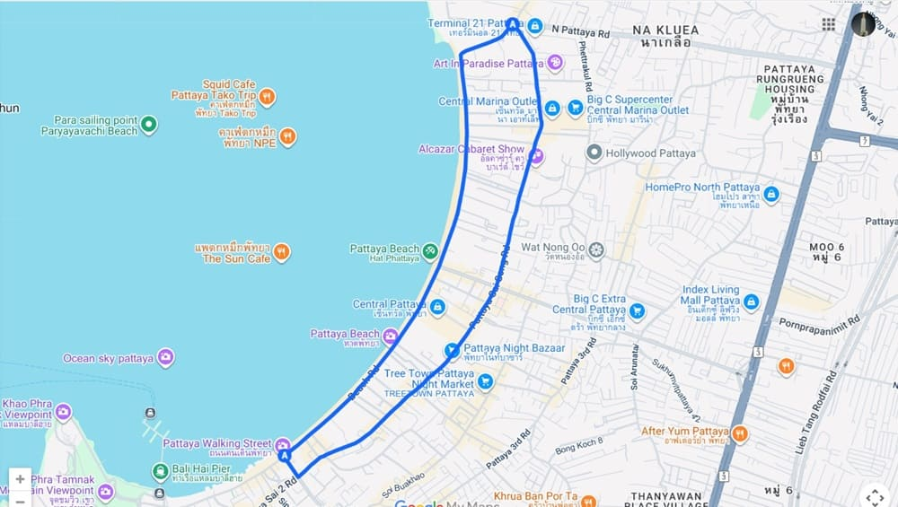
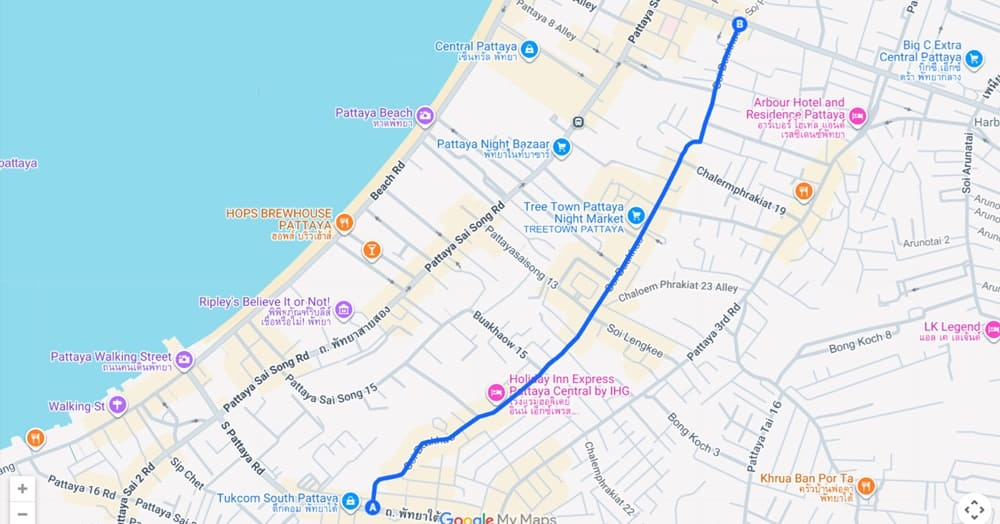
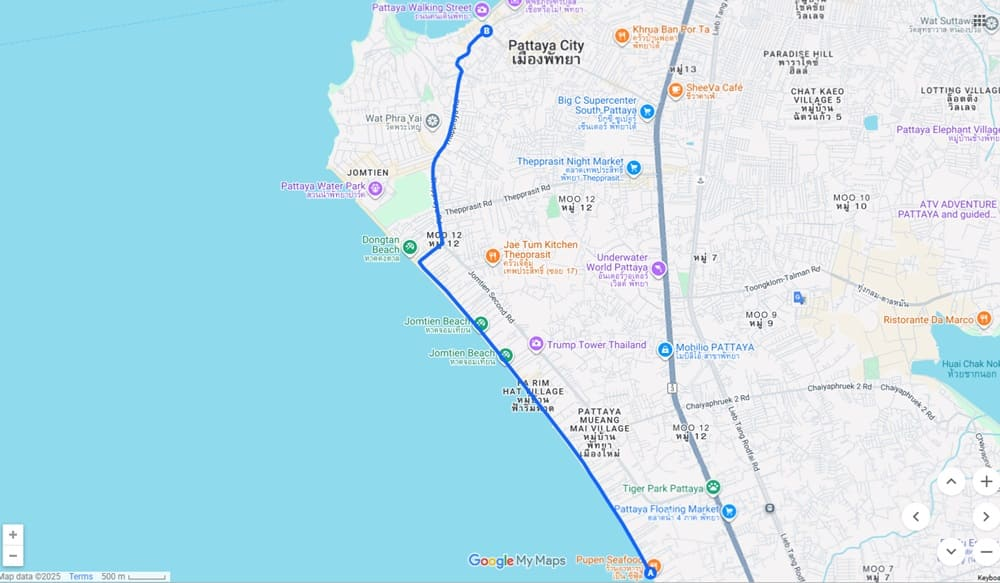
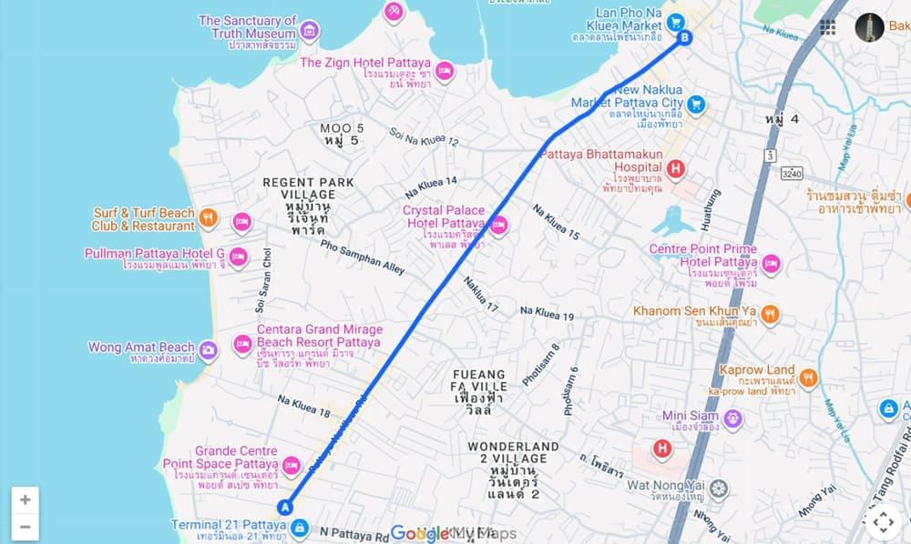

Pattaya • Getting Around • Guide
Pattaya Songthaew (Baht Bus) Routes: A Complete Guide
By Genext Information Systems Staff
Published 7 July 2026 • Updated 20 July 2026 • 8 min read

Pattaya is one of Thailand's liveliest beach towns, and getting around it doesn't have to cost much. The Songthaew, known locally as the Baht Bus, lets you cross nearly the whole city for just 15 to 20 baht (about US$0.45–0.60). It's not just a way to get from A to B — it's part of daily life here, ridden by locals, expats, and visitors alike on their way to Walking Street, Jomtien Beach, Terminal 21, and everywhere in between.
Getting around Pattaya
Pattaya has no Skytrain or metro like Bangkok. Instead, the city runs on a handful of options:
- Songthaews (Baht Buses): shared pickup trucks on fixed or semi-fixed routes.
- Motorbike taxis: quick rides over short distances.
- Grab or Bolt: app-based convenience at a higher price.
- Taxis: available, but often quoting inflated tourist rates.
Of these, the Baht Bus is the cheapest and most practical, running around the clock and covering most of the city.
What exactly is a Baht Bus?
A Baht Bus is a converted pickup truck with two long bench seats facing each other in the covered truck bed, which is where the Thai name comes from — "songthaew" (สองแถว) translates to "two rows." The name "Baht Bus" is a holdover from the days when the fare was just 5 baht; it later settled at 10, where it stayed for over 30 years, and the nickname stuck.
Each truck typically:
- Seats 8–12 passengers on the bench seats
- Has a buzzer button inside to signal your stop
- Has open sides for airflow and sightseeing
- Runs continuous loops along the major city roads
Riding one is safe, social, and cheap, and everyone uses them, from workers on their commute to tourists heading to the beach.
Boarding, riding, and paying
Flagging one down is easy: stand roadside and wave. If the driver slows, hop in the back — no need to speak to them first unless you want to confirm the direction. Take a seat on the bench, or if it's full, stand on the rear step and hold the rail, which is common practice. Just steer clear of standing right next to the driver's cab. During downpours, some Songthaews have plastic covers that roll down over the open sides to keep everyone dry.
To get off, press the buzzer once you're near your stop and the driver will pull over at the next safe spot. Only pay once you've stepped down:
- Get off the bus first, then walk up to the driver's window.
- Hand over 15 or 20 baht and say "khop khun krub/ka" (thank you).
- No tickets involved — everything runs on cash.
The main routes
Around eight Songthaew routes operate across Pattaya. Tourists rely mainly on three: the Beach Road–Second Road loop, the run down to Jomtien Beach, and the route north to Na Kluea. The rest serve more local, everyday travel.
Beach Road & Second Road loop

This is the busiest and most-used route in the city, built around Pattaya's one-way traffic system: Beach Road runs south, Second Road (Pattaya Sai Song) runs north, and together they form a loop through the center of town.
Southbound (Beach Road): Dolphin Circle → Central Festival → Royal Garden Plaza → Walking Street. It starts near Terminal 21 in the north and follows the busiest stretch of road in the city, lined with beachfront hotels, malls, and restaurants, so expect frequent stops and slow traffic.
Northbound (Second Road): South Pattaya Rd → Central Pattaya Rd → North Pattaya Rd → Terminal 21 / Dolphin Circle. Also one-way, but less congested, making it the faster leg when heading back north.
- Start: Dolphin Circle (North Pattaya)
- Turnaround: Walking Street (South Pattaya)
- Fare: 15 baht
- Frequency: Every few minutes, day and evening
To reverse direction, just cross to the other road. Beach Road is busier with slower traffic; Second Road is usually the smoother ride.
Soi Buakhao route

Soi Buakhao is Pattaya's busiest local street, dense with markets, massage shops, restaurants, and nightlife, and a favorite for budget travelers staying in central or southern Pattaya.
- Type: Two-way road
- Connects: South Pattaya Road ↔ Central Pattaya Road
- Route: Runs parallel between Beach Road and Third Road
- Fare: 15 baht (one-way)
- Good for: LK Metro, Tree Town, Buakhao Market, and the many guesthouses and bars along the street
- Frequency: Every few minutes, day and evening
Pattaya to Jomtien Beach

One of the most popular lines, and the easy way to reach Jomtien Beach — the quieter, more relaxed stretch of coast just south of the city — without giving up the seaside atmosphere.
Trucks start near the Second Road/South Pattaya Road junction by Walking Street, then head south along Thappraya Road and down Jomtiensaineung Road, tracking the coastline the whole way — a breezy ride with sea views past the full length of Jomtien Beach. The route ends near Soi Na Jom Tien 2, at the quieter end of the beach.
- Fare: 15–20 baht depending on distance — 15 for short trips within one area (e.g. within Jomtien), 20 between areas (e.g. Pattaya City to Jomtien)
- Return trip: Just board another Songthaew heading the opposite direction
Look for trucks with "Jomtien" signs on the front or sides — those are the ones headed to the beach.
One quirk on the return leg: some drivers don't stop right at Walking Street. Instead they continue north up Second Road toward Dolphin Circle before looping back down Beach Road. If your stop is near Walking Street, press the buzzer as you get close, or hop off when the truck slows at the junction.
Pattaya to Na Kluea

This route serves Pattaya's northern neighborhoods — a quieter, more local part of town favored by long-stay visitors in apartments and boutique resorts — while keeping quick access to the city center.
Trucks begin at Dolphin Circle (the junction of Pattaya-Na Kluea Road and Naklua Road) and head north past hotels, seafood restaurants, and residential streets, ending near Soi Naklua 7 by Lan Pho Na Kluea Market, a local favorite for fresh seafood stalls and evening food vendors.
- Fare: 15–20 baht depending on distance
- Frequency: Every 10–20 minutes during the day, less frequent late at night
If you're staying in North Pattaya, this route is your everyday lifeline to the beach, the seafood markets, and central Pattaya — no taxis or apps required.
South Pattaya route
This route links the city center with Sukhumvit Road, the main highway connecting Pattaya to Bangkok and the rest of Chonburi. Unlike the one-way loops, trucks here run in both directions along South Pattaya Road, so you can catch one from either side of the street.
It starts at the Second Road/South Pattaya Road junction in front of Wat Chai Mongkol, a well-known Buddhist temple, then heads east past markets, shops, and residential areas to the Sukhumvit intersection. Some trucks also run a short loop confined entirely to South Pattaya Road, handy for quick hops within the area.
- Fare: 15 baht for short rides, up to 20 baht toward Sukhumvit Road
- Frequency: Every 10–20 minutes during the day, fewer late at night
Central Pattaya route
Running straight through the heart of the city, this route connects Sukhumvit Road to Beach Road along Central Pattaya Road — one of the most direct ways to reach the malls, hotels, and entertainment areas in the center.
Trucks run in both directions along Central Pattaya Road, passing markets, restaurants, and department stores. Some continue south along Beach Road past Central Pattaya Mall and Royal Garden Plaza toward Walking Street, then loop back north via Second Road, forming a convenient city circuit.
- Fare: 15–20 baht depending on distance
- Frequency: Every 10–20 minutes during the day, frequent in the evening near shopping and nightlife areas
North Pattaya route
The most direct link between Sukhumvit Road and the seaside in the north of the city. Trucks start at the Sukhumvit/North Pattaya Road intersection and head west past markets and local shops to Dolphin Circle — the key junction where Beach Road, Second Road, and Na Kluea Road all meet — running in both directions along the way.
- Fare: 15–20 baht depending on distance
- Frequency: Every 10–20 minutes, regular service daytime and early evening
Useful for Terminal 21, Dolphin Circle, or connecting onward to the Naklua and Beach Road routes.
Chartering a Songthaew
For destinations off the regular routes — like Buddha Hill, the Floating Market, or Nong Nooch Garden — you can hire a Songthaew privately. Negotiate with the driver before boarding, confirm whether the price is per trip or per hour, and agree on the fare clearly; some drivers quote high, so haggle politely.
Typical charter prices:
- Short trip: 200–300 THB
- Half-day city tour: 400–600 THB
- Long trip (e.g. Nong Nooch, Floating Market): 600–800 THB
Split between three to six people, chartering can still beat taxi fares.
One thing to watch for: if you tell a driver your destination before boarding a shared ride, they may assume you want to charter the whole truck and quote accordingly. For a normal shared ride, just hop in without discussing where you're headed, ring the buzzer at your stop, and pay the standard fare.
Practical tips
- Confirm your direction. If you're unsure, ask the driver "Jomtien?", "Beach Road?", or name your destination before boarding. Many drivers speak little English, so showing your destination on Google Maps helps, and a friendly smile goes a long way.
- Keep Google Maps open. It's the easiest way to track your position and know when to hit the buzzer, especially useful since drivers sometimes detour.
- Pay the standard fare confidently. Hand over the money and go; travelers who hesitate are sometimes asked for more.
- Travel light. Space in the back is limited, so keep bags small and don't block other passengers or the rear exit.
- Be polite. A smile and a "khop khun krub/ka" is appreciated by drivers and fellow passengers.
- Night rides run late. Baht Buses operate into the small hours and are generally safe, though fares may bump up to 20 baht after midnight in busy spots like Walking Street or Jomtien.
Route detours and vehicle color
Songthaews mostly stick to their fixed routes, but not always. Since these trucks can't easily make U-turns, drivers who miss a turn or need to skip ahead will sometimes loop around a nearby block before rejoining their usual path. It's common enough on busy streets that it shouldn't worry you — just watch your route on your phone, and if the driver clearly heads the wrong way, press the buzzer and get off; another Songthaew will be along within minutes, and the fares are low enough that it costs almost nothing.
It's also worth knowing that a Songthaew's color doesn't reliably indicate its route in Pattaya, despite what some visitors assume. A handful of general color patterns exist, but plenty of trucks operate independently of them. You're better off identifying your route by the road you're standing on and cross-checking a route map, rather than looking for a particular paint job.
A note on fares: the 2026 increase
In April 2026, Pattaya's songthaew operators raised fares for the first time in more than 30 years, ending the famous 10-baht flat rate. The new structure is simple: 15 baht for trips of roughly 1–10 kilometers — which covers most rides along Beach Road, Second Road, Soi Buakhao, and within Jomtien — and 20 baht for longer trips that cross between areas, such as central Pattaya to Jomtien or north into Naklua. The operators' co-operative cited fuel, maintenance, and cost-of-living increases that the frozen fare had long stopped covering.
In practice, nothing about riding has changed: pricing is still flat-rate and cash-based, with no meters or apps involved. Carry small bills and coins — 20s especially — since drivers rarely have change for larger notes.
The bottom line
Between the fixed loops, the flat fares, and the constant stream of trucks running day and night, the Baht Bus remains the simplest way to see Pattaya the way locals do — cheaply, and without needing to book a thing. Even after the increase, a heavy baht-bus day costs less than a single fruit shake; plug it into your trip numbers at ThaiHolidayBudget and watch it disappear into the rounding. And if riding the blue pickups has you wondering how long you can actually stay, ThaiVisaFinder lays out the current visa options in plain English.
See you on the tail rack.